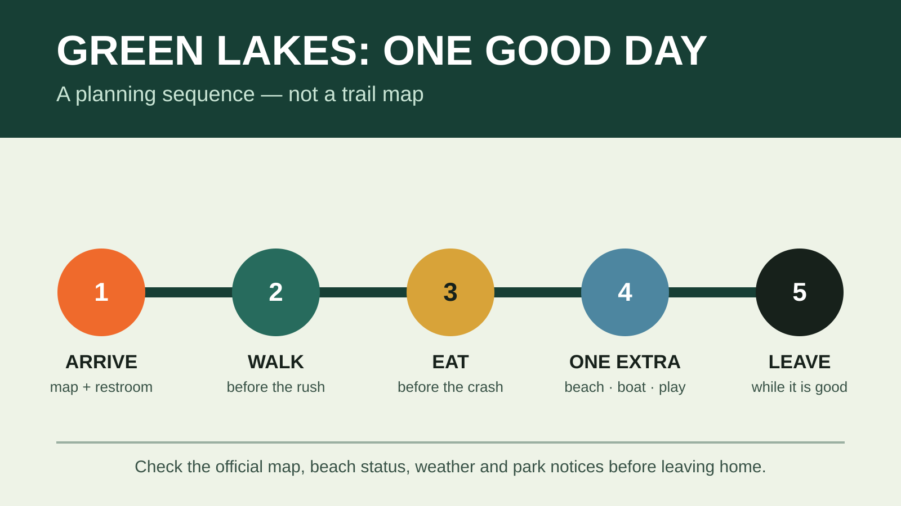

SYRACUSE FAMILY DAY PLAN
Green Lakes State Park With Kids: A No-Stress Syracuse Day Plan
Walk first. Eat on time. Pick one second act. That is enough.

Is this the right day for your family?
Green Lakes State Park is the high-payoff local option for families who want clear green-blue water, a manageable walk and real park facilities without spending half the day in the car. The two glacial lakes are meromictic, meaning their water layers do not mix in the usual spring-and-fall pattern. That is the reason to treat the shoreline as more than a pretty backdrop—and the reason the park prohibits outside boats, kayaks and canoes.
Good fit: school-age kids who can handle roughly an hour of easy walking with stops, families who want a swim-or-hike choice, and adults who are willing to quit after one good loop. Skip or simplify: a child who cannot stay with an adult near water, an active-thunderstorm day, or a group that needs every activity guaranteed. Swimming, rentals and the nature center are seasonal and operational details can change the morning you leave.
The current facts to check before you load the car
- Address: 7900 Green Lakes Road, Fayetteville, NY 13066. The main entrance serves the beach, campground and day-use area.
- Park hours: New York State Parks lists the park as open year-round from dawn to dusk.
- Summer vehicle fee: the official page currently lists $10 per vehicle from 8 a.m. to 7 p.m. daily, Memorial Day weekend through Labor Day 2026. Admission and collection rules are volatile.
- Swimming: the 2026 guarded-beach schedule is currently May 23 through September 7, 11 a.m. to 7 p.m. daily. Swim only when and where the park permits it. Check water quality and lifeguard status before leaving.
- Boat rentals: current late-summer hours run 10 a.m. to 4 p.m. daily through September 7, with boats due off the water by 5 p.m. Rentals are first come, first served; outside watercraft are prohibited.
- Contact: 315-637-6111. Call when a facility, accessibility need or long drive depends on a specific answer.
From downtown Syracuse, plan roughly 20 to 30 minutes in ordinary traffic. From northern or western suburbs, allow more. That is a planning estimate, not an official drive time; check navigation before departure and do not turn a short local day into a race against a reservation.
The itinerary: one loop, lunch, one choice
9:15 a.m. — Arrive before the beach rush
Use the restroom, photograph the current trail map and make the day’s first decision while everybody is still rational. If the sky is unstable, stay close to the main day-use area. If it is hot and clear, put swim gear where it can be reached without unloading the entire car.
9:30–10:45 a.m. — Take the lake walk at kid pace
The park’s own guided-hike description calls the Green Lake walk about two miles on a flat crushed-gravel trail and normally allows 60 to 90 minutes. Treat that as a planning reference, not a promise about today’s surface or your family’s speed. Use the posted map, stay on the established route and stop where kids can look without blocking other visitors.
Give the walk a mission: find three shades of green, notice where forest meets water, or let each kid choose one photo stop. The mission makes a compact loop feel like an outing instead of mandatory exercise. Bikes are not allowed around the Lake Trail, according to the park amenity listing, so save a bike plan for a designated route.
10:45 a.m. — Snack and make the second-act call
Water first. Then check energy, weather, beach status and lines. Do not make a tired kid defend a preference in open debate. Offer two real options: “beach or playground?” or “boat rental or nature center?” If one is unavailable, the choice is already made.
11:00 a.m.–12:15 p.m. — Pick exactly one anchor
Beach: confirm guards and water quality, use the designated area and keep the adult attention on the water—not the phone. Rental boat: choose only if the whole crew can follow staff instructions and the available craft fits the party; wear required flotation and obey the return time. Nature center: a strong heat or drizzle pivot, but hours and one-day closures happen. Playground: the cleanest answer when the family needs movement without another scheduled attraction.
12:15 p.m. — Eat before the collapse
Bring a simple picnic and use the park’s picnic facilities, or check current restaurant operations before counting on food inside the park. The official page currently lists Yards Grille, but hours can change and it is tied to the golf operation. A packed lunch avoids a hunger emergency; our family day-trip cooler guide explains how to choose and pack the smallest setup that keeps perishables cold.
1:00 p.m. — Decide whether the day is already complete
If the kids walked, looked, played and ate, the day worked. Leave. If energy is genuinely good, take a short shoreline look or repeat the favorite activity. Do not add a second lake loop because the car is nearby and daylight remains. The landing at home counts.
What to pack
- Walking shoes with useful tread, plus dry socks and a change of kid clothes.
- Swimsuits, towels and a bag that separates wet gear—but only if the guarded beach is confirmed open.
- Water, lunch, fast snacks and any required medication.
- Sun protection, insect repellent and a tick-check plan.
- Rain layer, compact first-aid supplies and a charged phone with the map saved.
- A small trash bag. Pack out what your family brings in.
For a cleaner loadout, use the family hiking daypack guide. The point is not to carry the outdoors department. It is to keep water, layers, food, navigation and small problems together.
Restrooms, food and the parking-lot reality
The official amenity list includes accessible showers, playgrounds, swimming beach and pavilions. Seasonal facilities do not all share the same hours. Use the restroom on arrival, keep one change of clothes in the car, and assume peak summer weekends will make the beach side busier after late morning. If the lot or day-use area is full, do not invent parking on a shoulder or block campground traffic. Leave and use a preselected legal backup.
Weather and meltdown backups
Thunder: get off the beach and water and return to a substantial building or enclosed vehicle; do not wait under a tree for the “quick one” to pass. Heavy rain: the nature center may help only when it is open, so a Syracuse indoor stop or home is the real backup. Heat: shorten the walk, move lunch earlier and use shade. Kid overload: restroom, water, snack, ten quiet minutes—then leave without negotiating for one more activity.
Check the NOAA forecast for the park coordinates and the New York State Parks beach-status page. The state says water-quality results lag sampling and specifically recommends calling the park for the most current beach status.
Pets and accessibility
The current park policy allows a maximum of two pets in day-use areas unless signs say otherwise. Pets must be supervised and either crated or on a leash no longer than six feet; staff may request proof of rabies vaccination. Pets are prohibited in playgrounds, buildings, golf courses, boardwalks and guarded beaches, with service-animal exceptions. That makes a beach-centered family plan a poor match for bringing the dog.
State Parks lists the beach, playgrounds, showers and pavilions as accessible. It also lists a Hippocampe all-terrain/beach wheelchair, free on a first-come basis during specified beach hours, with availability checked through lifeguards. Equipment, surface and staffing can change. Call the park before departure when access depends on a particular route or device.
Who should skip this version
Skip the full plan if swimming is the only acceptable outcome and the beach status is uncertain, if a mobility requirement has not been confirmed, or if storm timing puts the group on open water. A 45-minute lake look and picnic can still be a good day. If that is not enough for the crew, pick another destination instead of trying to force value from a $10 parking fee.
Official sources and check-before-you-go links
Operational details were checked August 23, 2026. Hours, fees, rentals, water quality, closures and accessibility equipment are volatile. Verify them directly before every visit.
- New York State Parks: Green Lakes overview, maps and contact
- New York State Parks: current Green Lakes hours, fees, rentals and rules
- New York State Parks: official trail map (PDF)
- New York State Parks: current beach-status guidance
Keep the weekend moving
Build the car and food plan with the family day-trip system and cooler guide. If the crew wants a bigger Lake Ontario trail day next, use the Chimney Bluffs family plan.